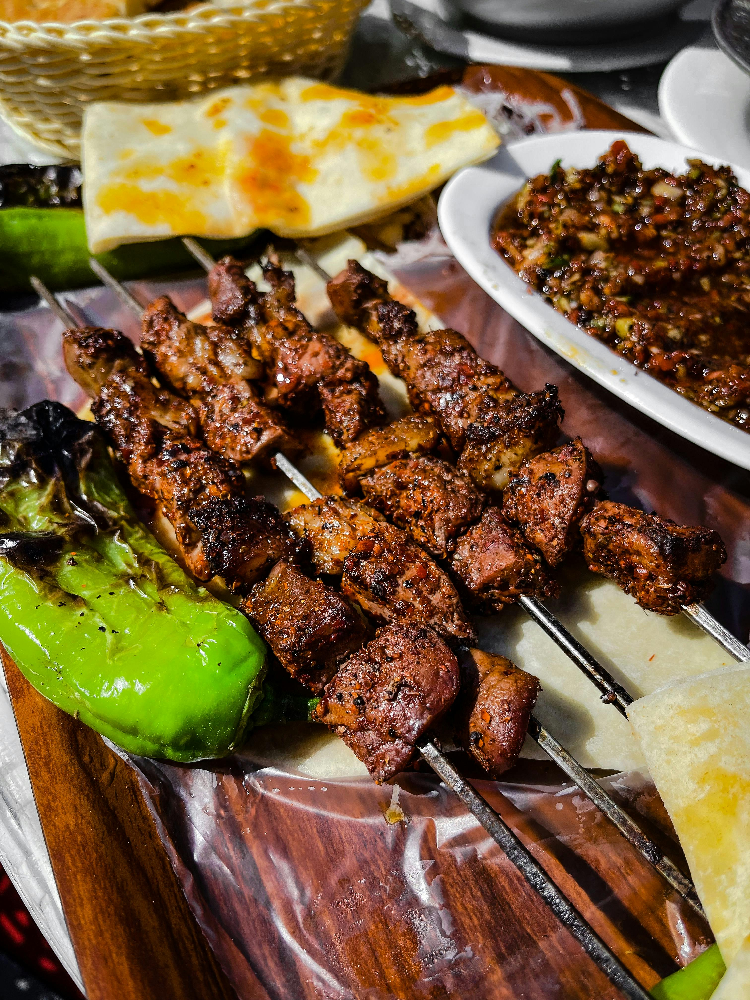

Anticuchos de Corazón (Grilled Beef Heart)
Ingridients
- 1 pound beef heart, trimmed and cut into 1-inch cubes
- 1/2 cup aji panca paste
- 1/4 cup red wine vinegar
- 3 tablespoons vegetable oil
- 4 cloves garlic, minced
- 1 teaspoon ground cumin
- 1/2 teaspoon oregano
- Salt and freshly ground black pepper to taste .
Nutrition
- calories
- 102
- fiber
- 1g
- protein
- 21g
- fat
- 5g
- carbohydrates
- 2g
How to Make It:
step 1
Marinate the beef heart: In a large bowl, whisk together the aji panca paste, vinegar, oil, garlic, cumin, oregano, salt, and pepper. Add the beef heart pieces and toss to coat evenly.
Cover the bowl and refrigerate for at least 3 hours, or preferably overnight, for the flavors to develop.


step 2
Prepare the grill: Preheat your grill to medium-high heat. If using wooden skewers, soak them in water for at least 30 minutes to prevent burning.
step 3
Assemble the skewers: Thread the marinated beef heart cubes onto the skewers.

step 4
Grill the anticuchos: Grill the skewers for 3-4 minutes per side, or until cooked through and slightly charred. Baste the skewers occasionally with the remaining marinade for added flavor.
step 5
Serve immediately: Enjoy your anticuchos de corazón with sides like grilled potatoes, corn on the cob, or aji Amarillo sauce for dipping.